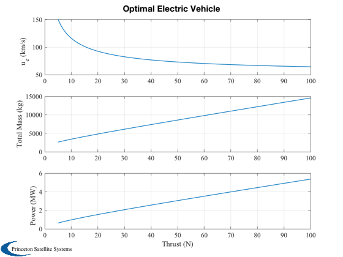

Generate the optimal electric propulsion system for a given delta-V.
Computes the optimal exhaust velocity for different thrusts. Note that the optimal exhaust velocity approaches 50 km/s asymptotically.
Things to explore:
1. Change the structural ratio, x.sR 2. Change the specific power, x.pR 3. Change the efficiency, x.eff
------------------------------------------------------------------------ See also OptimalVehicle, Plot2D ------------------------------------------------------------------------
%-------------------------------------------------------------------------- % Copyright (c) 2014 Princeton Satellite Systems, Inc. % All rights reserved. %-------------------------------------------------------------------------- % Since version 2014.1 %-------------------------------------------------------------------------- thrust = linspace(5,100); % N n = length(thrust); x = struct(); x.dV = 48.01e3; % m/s x.uE = 10000; % m/s guess x.pR = 1000; % 1000 W/kg x.sR = 0.04; % kg/kg x.mP = 1241; % kg x.eff = 0.6; massTotal = zeros(1,n); uE = zeros(1,n); power = zeros(1,n); for k = 1:n x.thrust = thrust(k); y = OptimalVehicle(x); power(k) = y.power; massTotal(k) = y.mT; uE(k) = y.uE; end % The 1 at the end makes the PSS logo have a white background %------------------------------------------------------------ Plot2D(thrust,[uE/1000;massTotal;power/1e6],'Thrust (N)',... {'u_e (km/s)' 'Total Mass (kg)' 'Power (MW)'},... 'Optimal Electric Vehicle',[],[], [], [], [], 1 ) %--------------------------------------